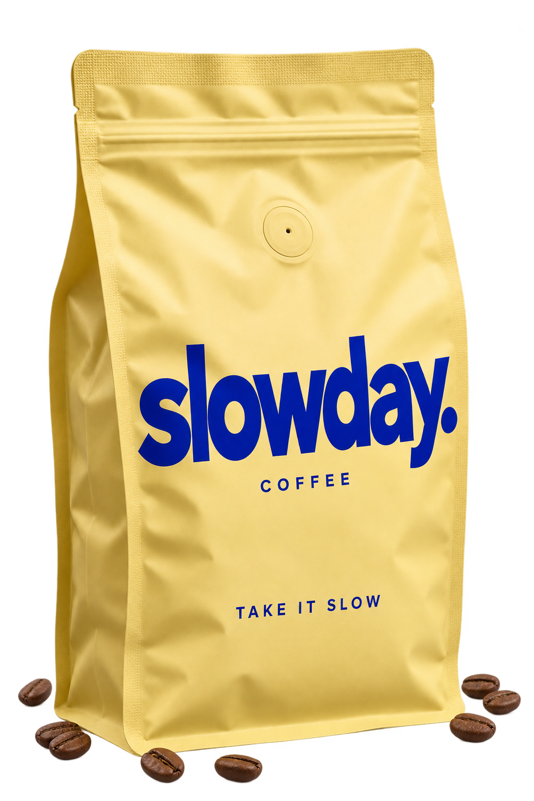
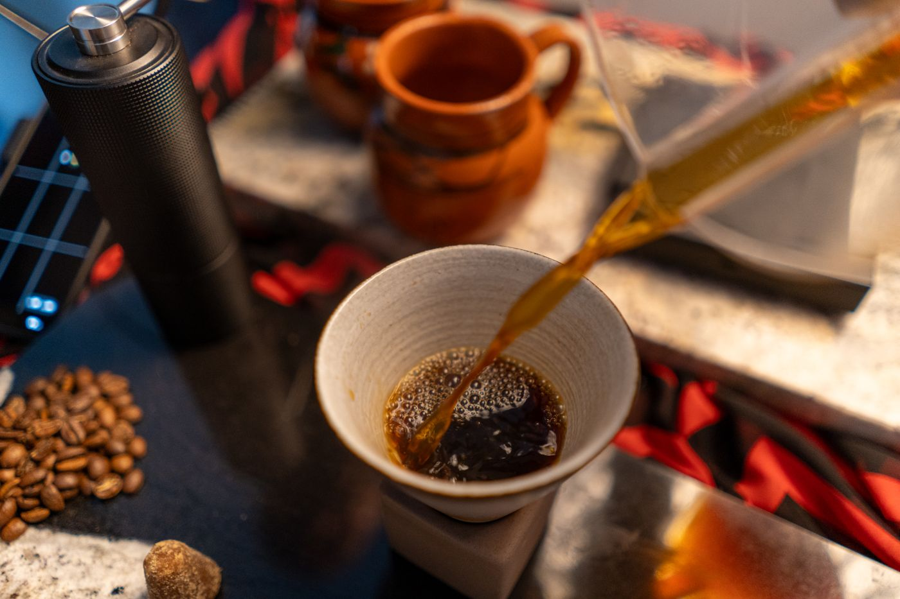

Koffie eerst.
De rest komt wel.
Voor een ochtend op jouw tempo.
Ontdek de koffie-edit
Een goed begin mag langzaam.
De geur van koffie, het geluid van inschenken en de eerste warme slok. Soms is dat alles wat een ochtend nodig heeft.
Jouw favoriete kop
Die mag vandaag gewoon weer uit de kast.
Rustig schenken
Neem ook even de tijd om van het zetten te genieten.
Zullen we nog even blijven?

Ontdek de koffie-edit